本文介绍怎么基于 Prometheus 做二次开发，以及怎么利用 github action 和 circle ci 发布镜像。
涉及到的项目有 prometheus/pometheus 和 prometheus/blackbox_exporter，其余项目可举一反三。
先导知识
Prometheus 的官方项目使用了两种 CI 平台：
- Github Actions，配套可复用的配置库 prometheus/promci
- 配套 和 CircleCI，配套可复用配置库 prometheus/circleci
如果需要个性化 CI 配置，可从上述配置库中理解运作原理。
构建工具：
- prometheus/promu，它可以来构建各平台二进制、构建各平台 Docker 镜像、源码打包、更新 Github Release 信息等。
准备工作
准备Github Token
1）到你的个人设置页的 “Developer Settings - Personal access tokens - Fine-grained tokens”（点击此处进入）：
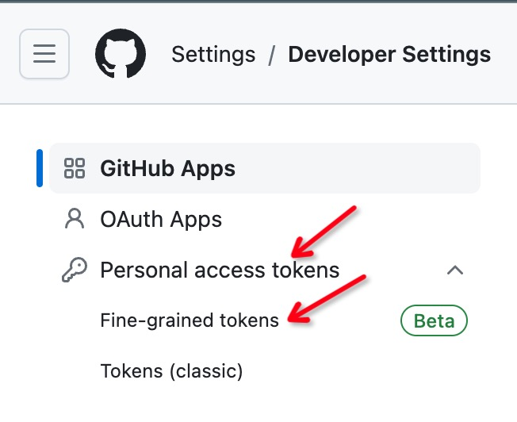2）点击 “Generate new token”
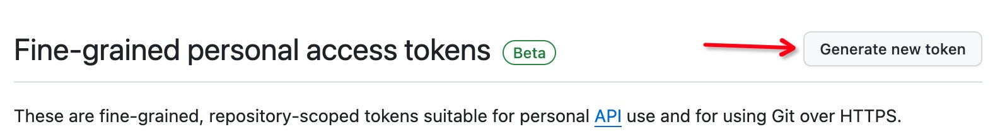3）设置好 Token 的名字，过期日期，在 “Repository access” 部分选择 “Only select repositories”。
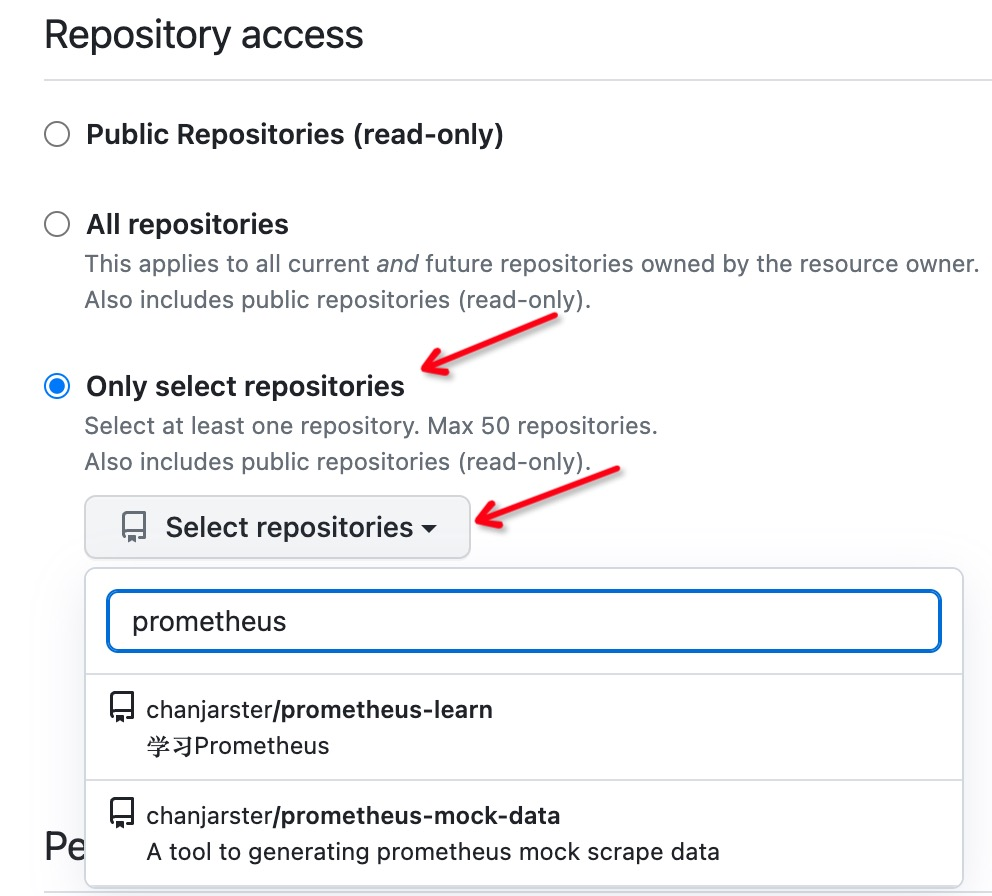3.1）如果在这一步还没有 fork 好仓库没关系，事后可以通过点击 Token
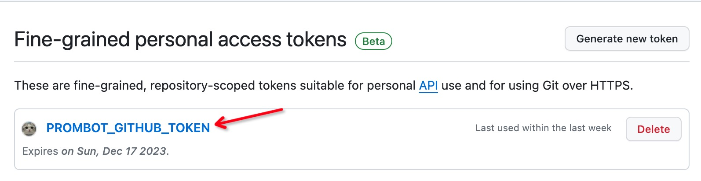进入 Token 详情页面，点击 “Edit” 按钮配置仓库：
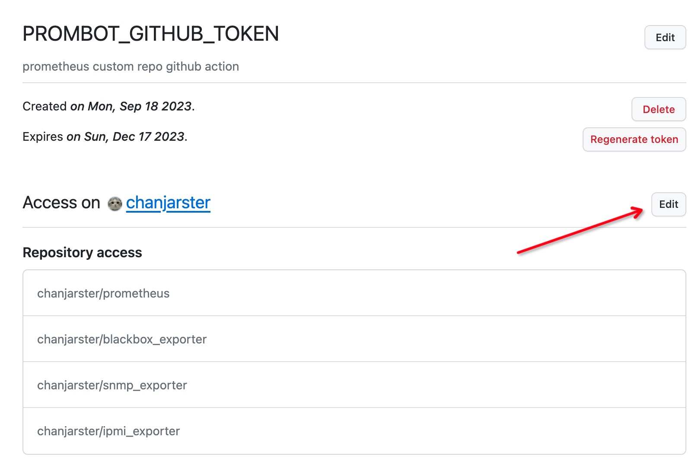4）设置 “Permissions - Repository permissions”：
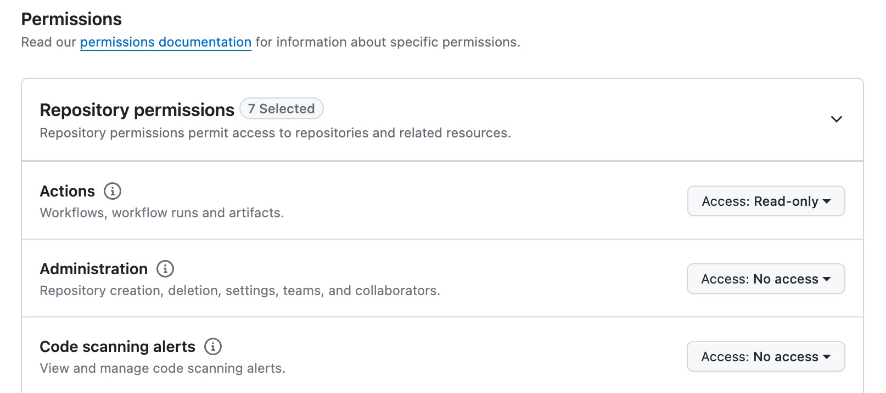设置这么几个权限（也许没必要这么多，但我就是这么设置的）：
- Actions, Read-only
- Commit statuses, Read-only
- Contents, Read and write
- Metadata, Read-only
- Pull requests, Read-only
- Secrets, Read-only
- Variables, Read-only
同样的，这些权限也可以事后修改。
5）最后生成 Token，把 Token 复制下来妥善保存，这个后面要用到：
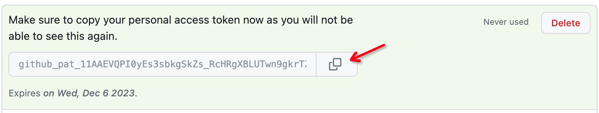注册 Docker hub 账号
到 Docker hub 上注册账号，因为之后你要将镜像推送到这个账号下面。
注册 CircleCI 账号
1）到 https://circleci.com/signup/ 注册 CircleCI 账号。
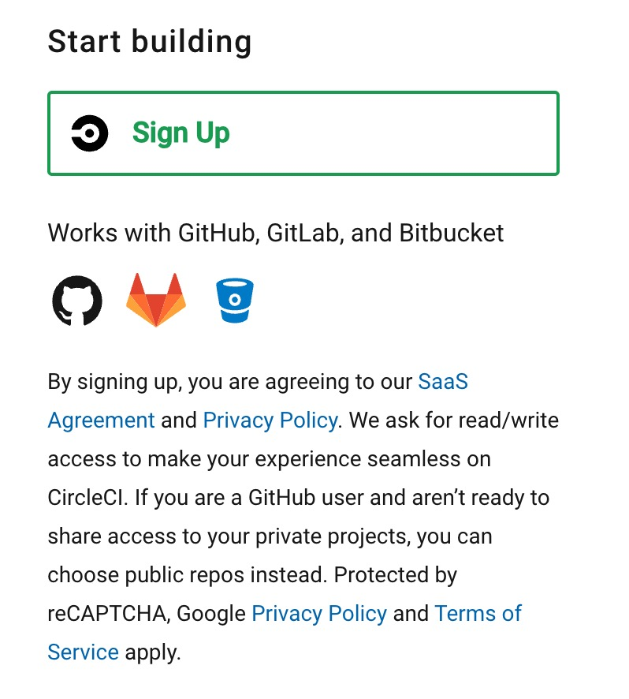2）开通对 Github 账号对访问权限。
登陆 CircleCI，进入 https://app.circleci.com/settings/user ，在 “Account Integrations” 里对 GitHub 点击 Connect，然后按照提示操作
这里具体步骤就不展开了，可以参考文档
只要你正确地在 Github 上给 CircleCI 授予了权限，那么在 Github Settings - Applications 里可以看到：
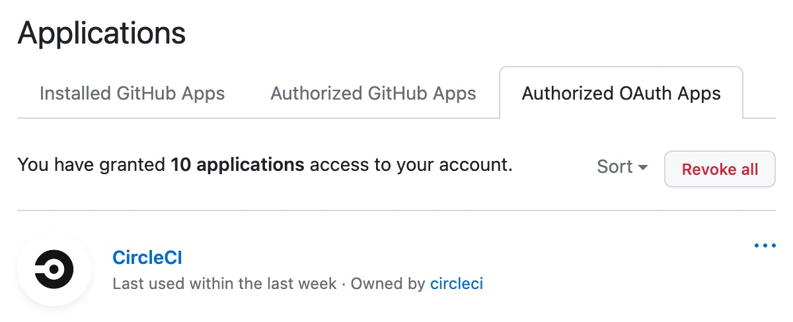而在 CircleCI 里就可以看到：
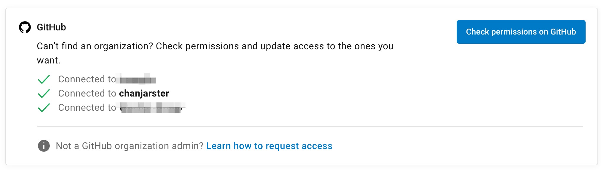配置项目的 CI
Prometheus
官方 Prometheus 项目使用的是 Github Actions CI 平台。
1）把 prometheus/pometheus fork 到自己的仓库里。
2）根据下文的 “分支开发规范” 切出一个分支
在该分支中修改 .github/workflows/ci.yml ，修改 publish_main 部分
把 needs 里的 test_windows 去掉，在 steps 的 with 里添加 docker_hub_organization：
|
|
同样的套路修改 publish_release。
3）进入仓库，点击 “Actions” 页签，点击 “启用 Action”，如下图：
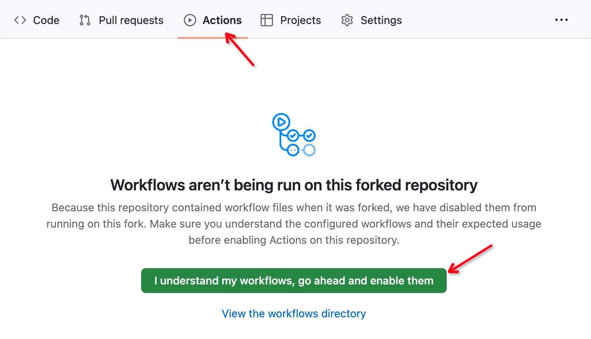4）进入项目的 “Settings - Secrets and variables - Actions” 页面，点击 “New repository secret”
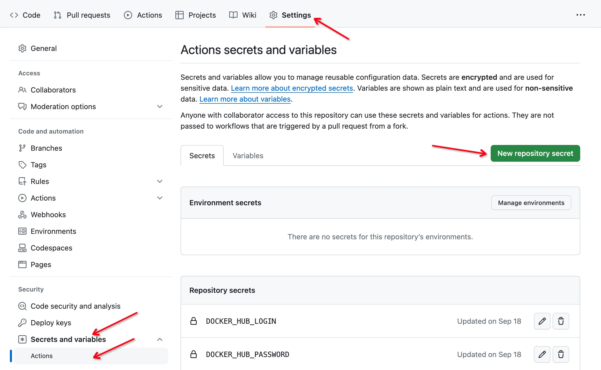新建以下几个仓库密钥：
DOCKER_HUB_LOGIN，Docker hub 的账号DOCKER_HUB_PASSWORD，Docker hub 的密码PROMBOT_GITHUB_TOKEN，之前生成的 Github Token
5）如此，当你对二次开发项目提交代码的时候，就会触发 Github Action。
Blackbox Exporter
官方 Blackbox Exporter 项目使用的是 CircleCI 平台。
1）把 prometheus/blackbox_exporter fork 到自己的仓库里。
2）根据下文的 “分支开发规范” 切出一个分支
在该分支中修改 .circleci/config.yml，对 prometheus/publish_release 部分添加以下内容：
|
|
3）进入 CircleCI 的 Dashboard 页面（点此进入） ，进入 “Projects” 页面，对 blackbox_exporter 项目点击 “Set Up Project”：
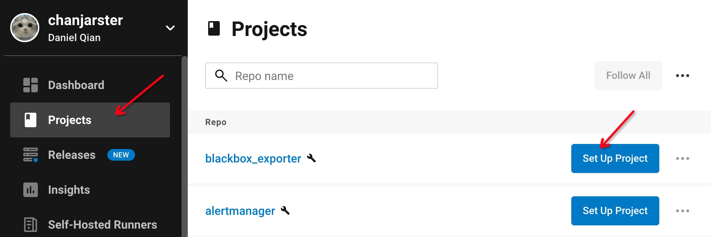如图配置好之后，点击 “Set Up Project”：
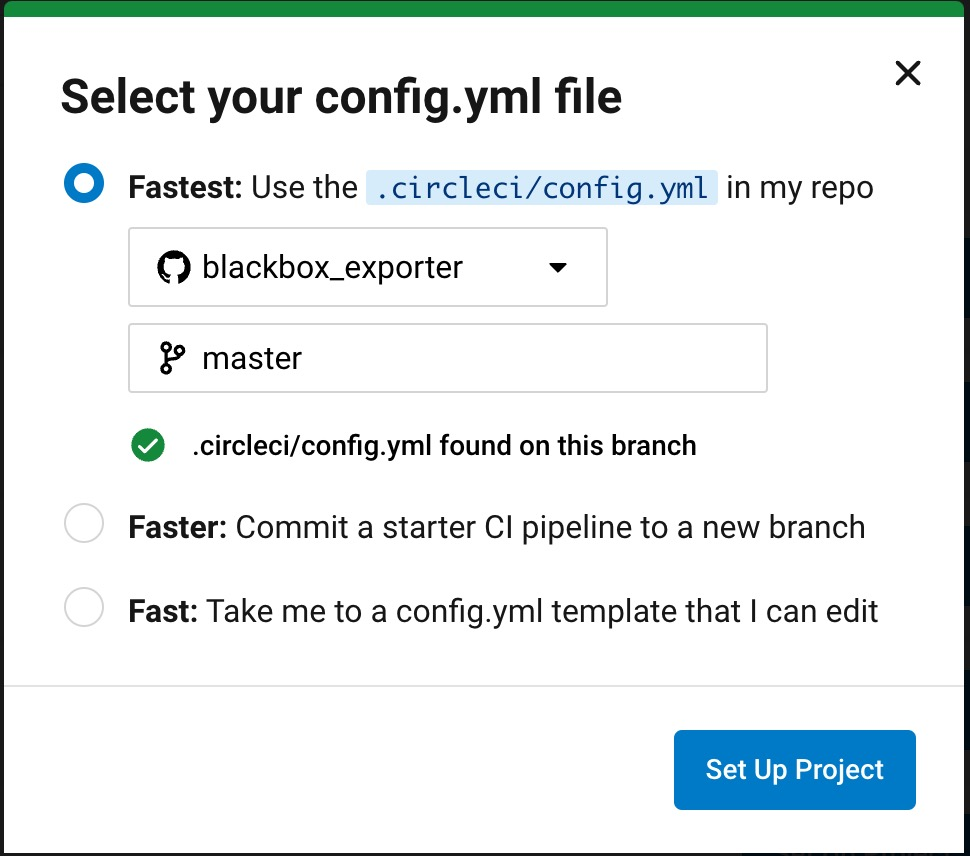4）配置环境变量。
还是在 “Projects” 页面，点击 blackbox_exporter 右边的 三个圆点，点击 “Project Settings”：
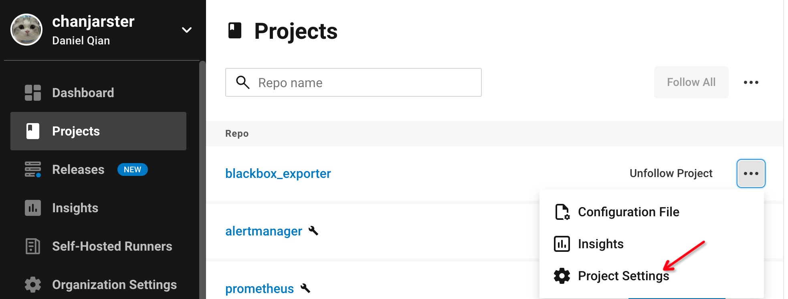进入 “Environment Variables” 页面，配置环境变量：
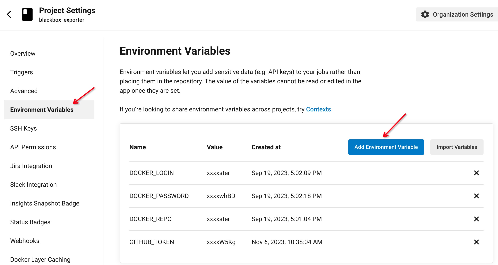要配置以下变量：
DOCKER_LOGIN，Docker hub 账号DOCKER_PASSWORD，Docker hub 密码DOCKER_REPO，Docker hub 账号GITHUB_TOKEN，之前创建的 Github Token
开发规范
和上游保持同步
随时和上游仓库保持一致，可以通过 Github 的 Sync fork 功能做到：
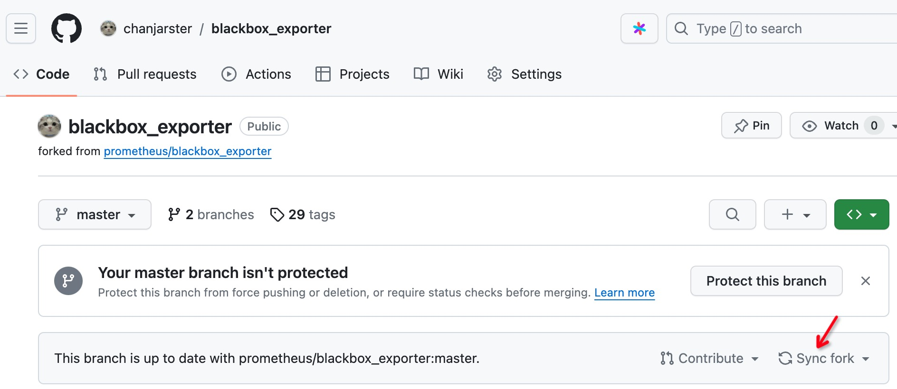不要动上游分支
上游仓库的分支在你的 Fork 仓库里有一个副本，所以千万不要去修改官方的任何分支，如果你修改了，Sync fork 就会出问题。
分支开发规范
因官方的 Tag 肯定都是稳定的且发布的版本，所以从官方 Tag 做二次开发是一个比较安全的选择。
比如下面这个命令就是从官方的 v2.47.0 Tag 切出了一个 mod/v2.47.0 分支：
|
|
然后定下二次开发的版本号，比如v2.47.0-mod.1 代表基于官方 v2.47.0 的第一个 mod 版本。
然后注意这么几点：
- 对应修改项目中的
VERSION文件，设置为你的二次开发版本号 - 编写项目中的
CHANGELOG.md文件 ，添加上对应的变更说明（版本和VERSION保持一致），格式正确则参照官方的写法，比如：1 2 3## 0.24.0-mod.1 / 2023-05-16 * [CHANGE] provide a custom mod version - 打 Git Tag 时，版本号和
VERSION保持一致
如果有一个没有正确完成，那么 Github Action / CircleCI 就无法正常工作，导致版本发布失败。
如果你正确做到了，那么 Github 仓库的 Release 里就会有你的二次开发版本，比如：
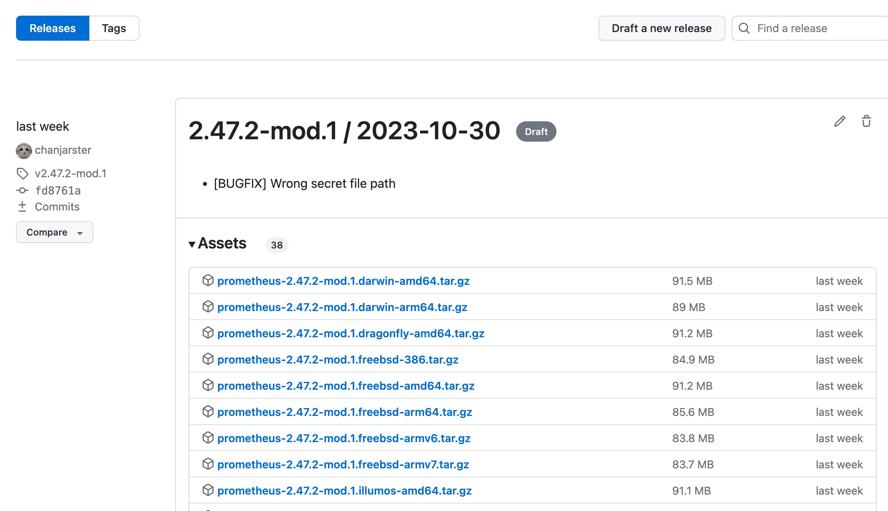而你的 Docker hub 账户下也会有二次开发版本的镜像，比如：
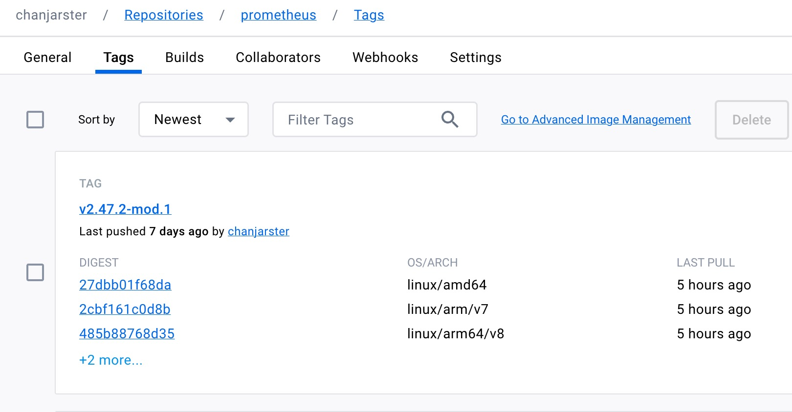跟随上游升级
上游发布了新版本（Tag），那么你就得和前面的一样，切出一个新的二开 mod/** 分支，然后把之前二开分支的提交弄到新的二开 mod/** 分支上。
方法一：通过 git cherry-pick
- 在
mod/v0.2.0上执行git cherry-pick <commit>，把mod/v0.1.0的 commit 一个个弄过来。
方法二：通过 git rebase
- 从官方新 Tag（假设
v0.2.0） 切出一个临时分支，比如git checkout -b tmp/v0.2.0 v0.2.0 - 从
mod/v0.1.0上切出一个mod/v0.2.0分支 - 在
mod/v0.2.0分支上执行git rebase tmp/v0.2.0
当然如果存在代码冲突则需要自行解决。
评论